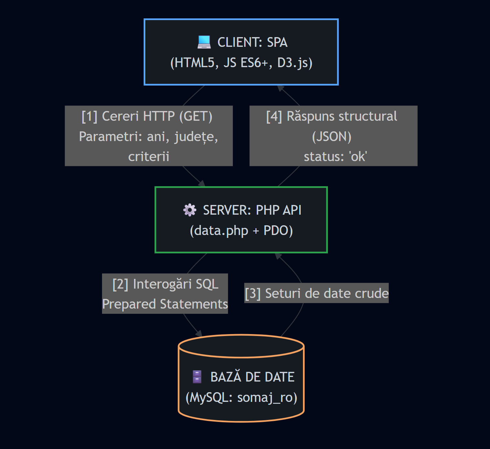

1. Introducere
1.1 Scopul Documentului
Prezentul document constituie specificația formală a cerințelor de sistem (SRS) pentru platforma
ȘomajRO, utilizând structura standardizată propusă de
IEEE Std 830-1998. Scopul este descrierea exhaustivă a funcționalităților esențiale,
a constrângerilor tehnice și a modului de interacțiune interfață-utilizator pentru modulul de analiză
multi-criterială a șomajului la nivel național și județean în România.
1.2 Domeniul de Aplicare al Produsului
Aplicația software ȘomajRO este un sistem de business intelligence și analiză vizuală de tip *Single Page Application* (SPA). Aceasta procesează indicatorii statistici relativi la piața muncii proveniți de la Institutul Național de Statistică (INS) și Agenția Națională pentru Ocuparea Forței de Muncă (ANOFM). Produsul final acționează ca un Tablou de Bord (Dashboard) capabil să unifice date demografice complexe și să le expună sub formă cartografică, grafică și tabelară, oferind totodată facilități de export vectorial și documentar local.
2. Descrierea Generală
2.1 Perspectiva Produsului
Sistemul este dezvoltat independent (standalone) din punct de vedere al utilizării, dar funcționează într-o arhitectură strict decuplată de tip Client-Server (Frontend static legat asincron de un API RESTful în PHP).

2.2 Funcționalitățile Sistemului (Sumar)
Produsul înglobează următoarele macro-funcționalități:
- Colectarea filtrelor demografice (interval de ani, gen, mediu de rezidență, grupă de vârstă, nivel de școlarizare).
- Interogarea asincronă sau prelucrarea matricială locală a datelor corelate.
- Generarea dinamică a indicatorilor analitici (medie globală, extreme absolute, tendințe evolutive).
- Vizualizarea prin reprezentări polimorfice controlate prin tab-uri (Grafic cu bare de volum, Linii de evoluție în timp, Radar multi-criterial adaptat și Hartă D3.js).
- Generarea și descărcarea rapoartelor structurate în formate de uz tipografic sau comercial (CSV, SVG, PDF).
2.3 Caracteristicile Utilizatorilor
Utilizatorul tipic este reprezentat de analiști guvernamentali, sociologi, jurnaliști de investigație sau studenți. Sistemul elimină necesitatea cunoașterii limbajului SQL sau a conceptelor avansate de baze de date, oferind un flux complet ghidat vizual.
2.4 Constrângeri
- Portabilitate: Funcționarea nativă în browsere compatibile ECMAScript 6+ fără adăugarea de extensii proprietare.
- Securitate: Interzicerea injectării parametrilor SQL dăunători prin URL (prevenție SQL Injection prin forțarea prepared statements).
3. Cerințe Specifice (Specificații Detaliate)
3.1 Cerințe Funcționale (Functional Requirements)
1 Modulul de Validare și Sincronizare a Filtrelor Temporale
Descriere: Sistemul trebuie să preia dinamic limitele temporale stabilite de utilizator prin intermediul controalelor de tip glisor (input type="range") și să aplice o validare în timp real asupra limitelor.
Logica de Interacțiune: Dacă valoarea selectată pe glisorul An început depășește valoarea configurată pe glisorul An sfârșit, sistemul va forța automat incrementarea glisorului de sfârșit astfel încât să egaleze valoarea de început, prevenind transmiterea unei perioade cronologice negative (ex. 2020 - 2015).
2 Subsistemul Polimorfic de Randare Vizuală (Chart Engine)
Descriere: În funcție de tab-ul activat de utilizator (Bare, Linie, Radar, Hartă, Tabel), sistemul trebuie să curețe instanțele grafice anterioare din memoria browserului (prin apelarea metodei destroy() din Chart.js) și să inițieze o re-randare completă a canvas-ului.
Comportament Segmentat:
- Graficul de Bare: Va grupa județele descrescător și va aplica un algoritm de colorare semantică (Peste 7% rata șomajului = Culoare Roșie; Între 4% și 7% = Portocaliu; Sub 4% = Verde).
- Graficul Radar: Va colecta toți indicatorii județelor bifate și îi va mapa pe o axă normalizată cu valori cuprinse strict între
0 și 10, permițând analiza structurală uniformă (educație vs. vârstă).
3 Motorul Cartografic Dinamic și Modul Afinitate Fallback
Descriere: Aplicația trebuie să genereze o hartă coropleth a României folosind biblioteca D3.js prin extragerea unui fișier GeoJSON extern.
4 Exportul Client-Side de Înaltă Rezoluție
Descriere: Datele procesate și încărcate în structurile de date JS trebuie să poată fi salvate la nivel local fără a re-interoga backend-ul PHP.
Specificații de Format:
- CSV: Export text. Aplicația va prependui în mod obligatoriu șirul de octeți BOM (Byte Order Mark)
\uFEFFpentru a asigura interpretarea nativă corectă a diacriticelor (ș, ț, ă, î, â) în programe de calcul tabelar ca Microsoft Excel. - PDF: Generare document pe bază de coordonate millimetrice. Dacă datele din tabel depășesc înălțimea paginii standard A4, sistemul trebuie să ruleze un algoritm de paginare automată (auto-pagination) pentru a asigura distribuția corectă a rândurilor pe pagini subsecvente.
3.2 Cerințe de Interfață și Interacțiune (User Interface Requirements)
1 Managementul Tooltip-ului Contextual Urmăritor
Descriere: La detecția evenimentului de mouse (mouseenter sau mousemove) pe o formă geometrică din hartă sau pe o bară de diagramă, interfața trebuie să mute clasa CSS a elementului global #global-tooltip din starea ascunsă în starea vizibilă.
2 Ordonarea Bi-Direcțională a Matricilor Tabelare
Descriere: Elementele capului de tabel (<th>) trebuie să asculte declanșarea evenimentului de tip click.
Algoritm: La primul click, datele din corpul tabelului vor fi sortate crescător după coloana respectivă. La un click consecutiv pe același antet, scriptul va inversa variabila de direcție (multiplicatorul de sortare -1), re-afișând rândurile în ordine descrescătoare.
3.3 Cerințe Non-Funcționale (Non-Functional Requirements)
1 Stabilitatea Datelor prin Tehnica Ping-Pong (Fault Tolerance)
Descriere: La inițializarea aplicației (evenimentul DOMContentLoaded), codul execută asincron o cerere către endpoint-ul data.php?action=ping.
Tratarea Erorilor: Dacă conexiunea dă fail sau statusul HTTP returnat este diferit de 200, componenta din antet #db-badge își va schimba culoarea din verde în roșu.
4. Arhitectura Securității Datelor la Nivel de API (Backend)
Pentru a asigura conformitatea cu cerințele de securitate ale standardului IEEE din punct de vedere al integrității datelor, scriptul backend PHP aplică filtre severe:
// Secvență extrasă din logica API pentru prevenirea SQL Injection
$yrStart = sanitizeInt($_GET['yr_start'] ?? 2010, 2010, 2010, 2023);
$yrEnd = sanitizeInt($_GET['yr_end'] ?? 2023, 2023, 2010, 2023);
// Utilizarea instrucțiunilor preparate PDO native (Fără emulare)
$stmt = $db->prepare($sql);
$stmt->execute([':ys' => $yrStart, ':ye' => $yrEnd]);Prin această arhitectură, orice încercare de atac prin manipularea parametrilor GET din URL este neutralizată complet înainte de trimiterea interogării către serverul MySQL.